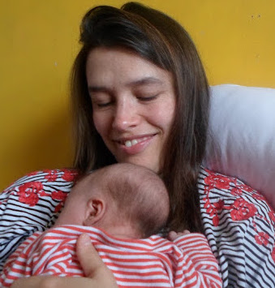

Website Credits and License
This website was built using Hugo with a tweaked version of the code editor theme. The image on the landing page was created by Richard Scott and is used with permission.
The content of this website, unless otherwise indicated, is licensed under a Creative Commons Attribution 4.0 International License. You can re-use any of its content as long as the following attribution is included, and you indicate if changes were made: © 2020 by Lucy Whalley (CC-BY 4.0).
Personal Summary

 My research uses solid-state physics and supercomputers to investigate why particular materials can efficiently generate energy from sunlight (solar cells), or repeatedly store and release energy (rechargeable batteries). I am a Vice-Chancellor’s Fellow at Northumbria University, and was previously a post-doc and PhD student in the Materials Design Group at Imperial College London.
My research uses solid-state physics and supercomputers to investigate why particular materials can efficiently generate energy from sunlight (solar cells), or repeatedly store and release energy (rechargeable batteries). I am a Vice-Chancellor’s Fellow at Northumbria University, and was previously a post-doc and PhD student in the Materials Design Group at Imperial College London.
 I am a qualified teacher (PGCE), and I have taught in a variety of settings - universities, prisons, primary schools and cafes. I currently teach basic programming skills to graduate researchers.
I am a qualified teacher (PGCE), and I have taught in a variety of settings - universities, prisons, primary schools and cafes. I currently teach basic programming skills to graduate researchers.
 I am a fellow of the Software Sustainability Institute. I am interested in how we can improve research practice in the computational sciences - with a focus on working openly and software publishing.
I am a fellow of the Software Sustainability Institute. I am interested in how we can improve research practice in the computational sciences - with a focus on working openly and software publishing.
Contact
Full name
Lucy Dorothy Whalley
Details
Department of Mathematics, Physics & Electrical Engineering Northumbria University Ellison Place Newcastle upon Tyne NE1 8ST
Email:
My CV can be downloaded as a pdf here.